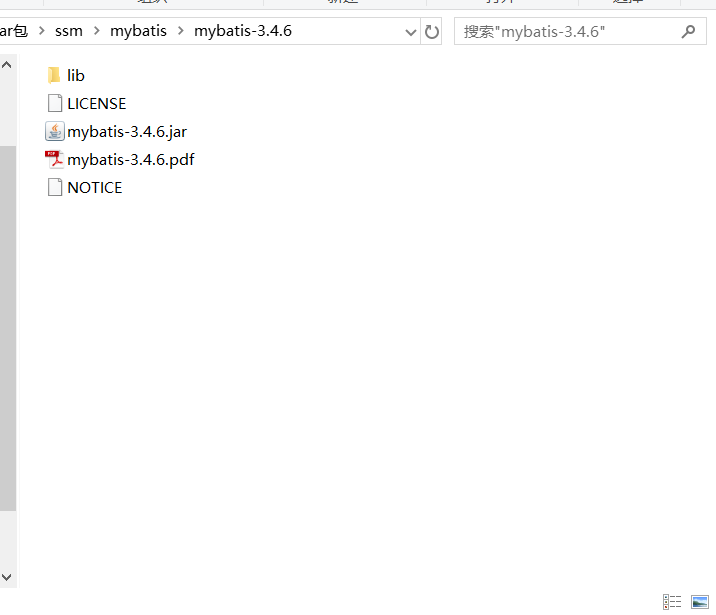
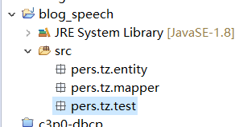
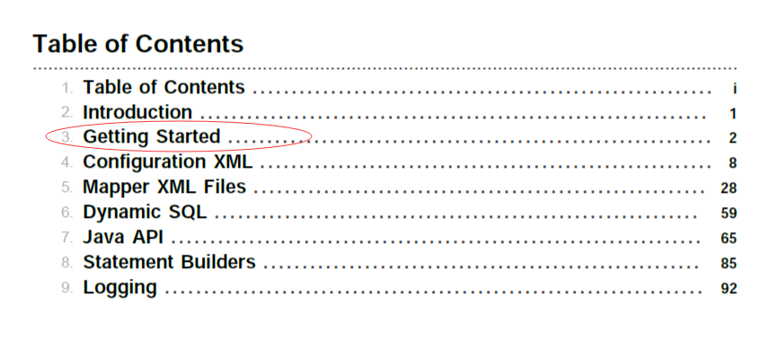
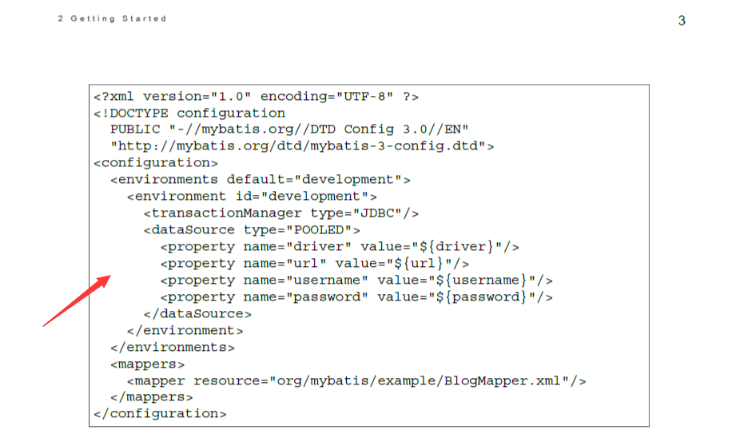

额，学习一门新事物时了解一下它的历史能在脑中形成一个大致的轮廓...进入正题...
mybatis以前叫做ibatis，ibatis是Apache旗下的产品，在2010年时google将其接管并更名为mybatis。(你可以发现它的包结构还是org.apache.ibatis)。
mybatis运行在三层架构中的Dao层，它的主要功能是简化jdbc操作，并且能够降低耦合(sql语句和java代码分离)，便于维护。mybatis是ORM(Object Ralational Mapping 对象关系映射)的产品。ORM框架将数据库中的表和JavaBean二者观念起来。但是，ORM框架只是一个理念，mybatis才是它的实现，比较著名的ORM框架还有hibernate，JPA等。
当我们大致了解了mybatis的概念与用处之后，我们就可以开始下载它啦，外网有时候不稳定，建议在中文官网下载，网址：http://www.mybatis.cn/82.html，下载完成你会得到一个压缩包，将其解压缩将得到文件结构如下：

好的~我们把注意力放在lib目录和mybatis-3.4.6.jar、mybatis-3.4.6.pdf上面来~其中lib是你在使用mybatis进行开发的过程中，可能会用到的一些jar包，而mybatis-3.4.6.jar是mybatis的核心jar包，剩下的mybatis-3.4.6.pdf很明显是官方文档啦~至于剩下的咱们装作没看见就好~
好的，当我们下载了mybatis之后，就可以使用它啦~前面虽然说它是一个作用于Dao层的框架，但它的实质是完成数据库表与JavaBean之间的关联，所以我们创建一个J2SE项目(普通的Java项目)即可，以eclipse为例就是new->java project，然后选中咱们的src目录，ctrl+n输入package，然后创建一个entity包和一个mapper包还有一个test包，额，咱们做测试就不用那么规范了额。其中entity包用于存放实体类，也就是JavaBean(为了防止可能有的童鞋不知道JavaBean是啥，这里简单交代一下：JavaBean的规范有三，类的访问权限为public、构造方法的访问权限为public且必须提供无参构造、所有属性的访问权限必须是private，嗯，最重要的是它与表是映射关系)；mapper包用于存放接口和xml文件，具体存放啥接口和啥xml文件先别着急，也别乱想，博主在下文会交代明白；最后的test包用于存放咱们的Test类，嗯，就是做测试的。
建完后的项目结构如图：然后咱们将刚刚下完的mybatis核心jar包复制粘贴到src目录下，并右键build path->add to build path加入环境~
接下来在src目录下创建一个xml文件(选中src ctrl+n 输入xml file)，该xml文件是mybatis的配置文件，其中最核心的配置信息是数据库的信息(驱动路径、url、账号密码之类的)和需要加载的映射文件路径(就是上文中提到的mapper包下面的xml文件)，该配置文件的名字可以随便起，在这里我们就命名为mybatis-config.xml吧！
关于配置文件的文件格式，我们可以查看mybatis的官方文档——mybatis-3.4.6.pdf。
找到目录我们先点击getting started：
然后我们往下翻到第3页，将这个模板直接复制到mybatis-config.xml文件中去：
ctrl+shift+f整理文件格式之后我们开始配置。
<?xml version="1.0" encoding="UTF-8" ?>
<!DOCTYPE configuration
PUBLIC "-//mybatis.org//DTD Config 3.0//EN"
"http://mybatis.org/dtd/mybatis-3-config.dtd">
<configuration>
<!-- 指定开发环境,通过default值与id值进行制定，这里我制定的就是mysql数据库环境 -->
<environments default="devMysql">
<!-- 配置开发环境，可以指定多个开发环境 -->
<environment id="devMysql">
<!-- 事务提交方式，这里设置JDBC是手动提交，一般都是手动提交哦 -->
<transactionManager type="JDBC" />
<!-- 数据源类型，POOLED是使用mybatis默认的数据源，
也可以选择UNPOOLED不使用数据源，
以及JNDI使用tomcat内置数据源，
不过一般推荐使用POOLED哦
-->
<dataSource type="POOLED">
<property name="driver" value="com.mysql.jdbc.Driver" />
<property name="url" value="jdbc:mysql://127.0.0.1:3306/testdb" />
<property name="username" value="root" />
<property name="password" value="abc" />
</dataSource>
</environment>
<environment id="devOracle">
<transactionManager type="JDBC" />
<dataSource type="POOLED">
<property name="driver" value="oracle.jdbc.OracleDriver" />
<property name="url" value="jdbc:oracle:thin:@127.0.0.1:1521:orcl" />
<property name="username" value="scott" />
<property name="password" value="abc" />
</dataSource>
</environment>
</environments>
<mappers>
</mappers>
</configuration>额，排版好大...咳咳，ok，我们这里配置了两个开发环境，分别对应于mysql数据库以及oracle数据库，我们将对应的数据库驱动jar包粘贴到src目录下并add build path加入环境~
接下来，我们在数据库中创建一个person表，我使用的是mysql数据库，建表语句如下：
create table person(
id int primary key,
name varchar(30),
age int,
gender int)
上文中提到，entity包下存放的是数据库表对应的实体类，那么是怎么个对应法呢？简单来说就是表名与JavaBean的类名关联，表中的字段与JavaBean中的属性关联(这个不关联也可以用别的手段解决，但是最好关联)，与person表对应的实体类代码如下：
package pers.tz.mapper;
/**
* @author tangze
* @create 2019-10-11 0:07
*/
public class person {
private int id;
private String name;
private int age;
private int gender;
public int getId() {
return id;
}
public void setId(int id) {
this.id = id;
}
public String getName() {
return name;
}
public void setName(String name) {
this.name = name;
}
public int getAge() {
return age;
}
public void setAge(int age) {
this.age = age;
}
public int getGender() {
return gender;
}
public void setGender(int gender) {
this.gender = gender;
}
public person(int id, String name, int age, int gender) {
this.id = id;
this.name = name;
this.age = age;
this.gender = gender;
}
public person() {
}
@Override
public String toString() {
return "person{" +
"id=" + id +
", name='" + name + '\'' +
", age=" + age +
", gender=" + gender +
'}';
}
}
接下来我们就可以开始写sql语句啦~我们之前说过，mybatis的一个作用在于解耦合，它将sql语句以及java代码分离，在以往，我们的sql语句是以字符串的形式与java语言混杂在一起的，这样的结构不利于维护，因此，现在咱们写在一个单独的文件中，这个文件就是上文中提到的mapper包下的xml文件，该文件的模板在官方文档中也能找到，这里我就直接列出来啦：
<?xml version="1.0" encoding="UTF-8" ?>
<!DOCTYPE mapper
PUBLIC "-//mybatis.org//DTD Mapper 3.0//EN"
"http://mybatis.org/dtd/mybatis-3-mapper.dtd">
<mapper namespace="命名空间">
</mapper>上方的代码就是mapper包下的xml文件的大致结构，一个xml文件与一个表相关联，负责该表的dml操作，也就是说sql语句都存放于该xml文件中。又由于xml文件与表相关联，所以我们不妨将该文件命名为personMapper.xml。我们在personMapper.xml中写入一条sql语句，即插入一个person记录：
<?xml version="1.0" encoding="UTF-8" ?>
<!DOCTYPE mapper
PUBLIC "-//mybatis.org//DTD Mapper 3.0//EN"
"http://mybatis.org/dtd/mybatis-3-mapper.dtd">
<mapper namespace="命名空间">
<insert id="insertPerson" parameterType="pers.tz.entity.Person">
insert into person values(#{id},#{name},#{age},#{gender})
</insert>
</mapper>id属性是该标签的唯一标识符，parameterType属性是传入参数的类型，这里接下来传入的是一个JavaBean，要写全类名，因为这是insert语句所以使用的是insert节点，与之相应的还有delete update select节点。接下来我们在mybatis-config.xml文件中关联personMapper.xml文件(我先讲步骤，你们也先会用，原理等流程完成之后我会说明)：
<mappers>
<mapper resource="mapper/personMapper.xml"/>
</mappers>然后...我们创建一个上文所说的mapper包下的接口，该接口用于与personMapper.xml文件关联，我们不妨起名为PersonMapper，然后将PersonMapper的全类名复制，作为personMapper.xml映射文件的命名空间...然后在该接口中创建一个insertPerson方法：
<?xml version="1.0" encoding="UTF-8" ?>
<!DOCTYPE mapper
PUBLIC "-//mybatis.org//DTD Mapper 3.0//EN"
"http://mybatis.org/dtd/mybatis-3-mapper.dtd">
<mapper namespace="mapper.PersonMapper">
<insert id="insertPerson" parameterType="pers.tz.entity.Person">
insert into person values(#{id},#{name},#{age},#{gender})
</insert>
</mapper>public interface PersonMapper {
int insertPerson(Person person);
}这样，personMapper.xml和PersonMapper.java就关联起来了，接口中的方法名对应xml映射文件中的id值，接口中的方法形参对应xml映射文件中的parameterType值，接口的全类名对应xml映射文件中的命名空间。实际上mybatis先通过它的配置文件(即mybatis-config.xml)找到映射文件(即personMapper.xml)，然后通过映射文件找到接口(PersonMapper.java)
走到这里我们的步骤差不多就走完了，就剩下测试类了。那么我们开始整一个测试类，在test包下创建一个类，我创建的是Test类：
public class Test {
public static void demo1(Person person) throws Exception {
//读入mybatis-config.xml文件
Reader reader = Resources.getResourceAsReader("mybatis-config.xml");
//工厂模式...嘤嘤嘤说错了别喷我
SqlSessionFactory sqlSessionFactory = new
SqlSessionFactoryBuilder().build(reader);
//获取一个session，你可以将它近似的理解为connection对象
SqlSession session = sqlSessionFactory.openSession();
//反射获取该接口的实现类，mybatis帮你生成的实现类
PersonMapper mapper = session.getMapper(PersonMapper.class);
int count = mapper.insertPerson(person);
//手动提交
session.commit();
}
public static void main(String[] args) {
demo1(new Person(1,"张三",17,1));
}
}执行完后..你就能看到在你的数据库表中多出一条记录啦...
最后来简单说一下它的原理...它的底层是对映射文件(personMapper.xml)进行解析，从而得到该文件中的sql节点(上文中的insert)，这样就能得到它的id值，parameterType值，以及其中的sql语句，那么它要得到这些值干嘛呢？看上方我们有这么一行代码：
PersonMapper mapper = session.getMapper(PersonMapper.class);这里的mapper对象的类型不知道你发现了没有，它的类型是一个接口！那么显然这个对象是该接口的实现类，但是这个实现类我们并没有写啊！难道这个对象就是该接口的实例？！这显然是不合理的，java的接口连构造方法都没有！那么真相就只有一个，有一个家伙偷偷的帮我们写了实现类...这个家伙就是mybatis。
实际上，mybatis通过mybatis-config.xml配置文件找到personMapper.xml映射文件，然后通过该映射文件找到对应的接口，mybatis底层会解析这个映射文件，解析sql节点的属性值和其中的sql语句然后在底层帮你生成该接口的实现类，然后父类引用指向子类实例，就能调用子类的方法啦...
额，第一部分就先到这里，如果我没有漏掉什么的话....完。
如有不对请及时指正，感激不尽